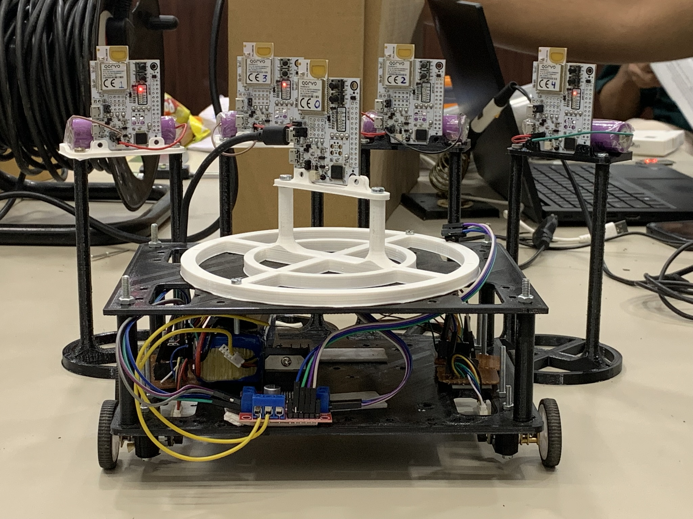

Autonomous Bot with Precise UWB Localization
View on GitHubProject Overview
As part of my internship after the end of my second year of engineering at Krishna Defence and Allied Industries, I worked on developing an autonomous mobile robot that uses Ultra-Wideband (UWB) technology for precise localization. The goal was to achieve centimeter-level accuracy in both indoor and outdoor environments, replacing traditional encoder-based localization with a more robust and drift-free solution.
Milestones & Technical Details
1. Understanding the Problem
We started by defining the requirements: achieve 1–2 cm localization accuracy in a 200 × 200 m area, keep costs low, ensure the system is autonomous and weather-independent, and minimize maintenance for use in a naval dockyard.
2. Technology Exploration
We compared several technologies (Bluetooth, LoRaWAN, RFID, NFC, radar, CCTV, IR, hyperspectral) and found UWB to be the best fit for high-precision localization. UWB needed careful tuning to reach the required accuracy.
3. UWB Hardware Selection
After researching available options, we selected the Qorvo DWM3001CDK UWB development kit for testing. We also gathered other electronics to build a basic mobile robot platform for lab experiments.
4. Building and Testing the Prototype
We built a simple robot using a Raspberry Pi 4B (running ROS), a DWM3001CDK UWB tag, a G-DOF IMU for orientation, and basic DC motors. We performed range and accuracy tests both indoors and outdoors, and used SLAM (Simultaneous Localization and Mapping) to map the environment by combining UWB and LIDAR data.
5. Achieving Reliable Localization
We successfully localized the robot within a 2 × 2 m area indoors, achieving consistent accuracy and reliable autonomous navigation.
6. Outdoor Testing (7 × 7 m Area)
We set up four UWB anchors at the corners of a 7 × 7 m square outdoors and demonstrated that the robot could localize itself and navigate autonomously using only UWB and IMU data (no wheel encoders or LIDAR for this test).
7. Large-Scale Validation (IIT Gandhinagar, 50 × 60 m)
We scaled up the system to a 50 × 60 m area, using the same 4-anchor + 1-tag setup. We verified the accuracy using a total station, confirming the system's scalability.
How UWB Localization Works
UWB localization is based on measuring the distance between a mobile tag (on the robot) and several fixed anchors. The robot calculates its position using trilateration, which means it finds its location by measuring its distance from at least three known points (anchors). We used four anchors for better accuracy and redundancy.
- Trilateration: The robot's UWB tag measures its distance to each anchor. Using these distances and the known anchor positions, the robot solves a set of equations to find its own (x, y) coordinates.
- IMU Integration: The IMU provides the robot's orientation (yaw angle), which is important for navigation.
Embedded System & ROS Integration
- Robot Operating System (ROS): We used ROS as the main software framework. ROS handled communication between the UWB, IMU, motors, and the user interface.
- Custom Firmware: For large-scale tests, we developed custom firmware for the DWM3001CDK modules. The stock firmware had a 45-meter range limit, so we implemented our own Double-Sided Two-Way Ranging (DS-TWR) protocol and added a custom message to send the calculated distance back to the robot.
- Parameter Tuning: We optimized UWB settings like preamble length, data rate, and delays to maximize range and stability. For example, using a longer preamble and lower data rate improved signal robustness for long distances.
- Navigation Stack: We wrote our own navigation logic in ROS. The robot could be teleoperated (manual control) or sent to a target coordinate, using only UWB for position and IMU for heading.
Key Results
- Indoor/Outdoor Accuracy: Achieved ±2 cm accuracy in small areas (up to 10 × 10 m).
- Large-Scale Range: After custom firmware, achieved stable UWB communication up to 315 meters and localization accuracy of ±40 cm in a 50 × 50 m area (limited mainly by setup errors, not the UWB itself).
- Fully Embedded Solution: The robot ran all localization and navigation onboard, with real-time data displayed in a custom UI.
Technical Results & UWB Configuration
During testing, we experimented with different UWB settings to optimize for range, accuracy, and update rate. Below are the main configurations and results:
| Test Scenario | Preamble Length | PAC Size | Data Rate | Range Achieved | Accuracy | Key Time Delays (units) |
|---|---|---|---|---|---|---|
| Indoor/Outdoor Small Area | 128 | 8 | 6.8 Mbps | 10 m | ±2 cm |
poll_TX_to_response_RX: 2400 response_RX_to_final_TX: 2400 response_RX_timeout: 1200 |
| Outdoor Medium Range | 256 | 16/32 | 6.8 Mbps | 50 m | ±10 cm |
poll_TX_to_response_RX: 1500 response_RX_to_final_TX: 1500 response_RX_timeout: 1200 |
| Large-Scale Field (Custom Firmware) | 512 | 32 | 6.8 Mbps | 315 m | ±40 cm |
poll_TX_to_response_RX: 2400 response_RX_to_final_TX: 2400 response_RX_timeout: 1200 |
Note: The time delays are in UWB device time units and were tuned for each scenario to maximize stability and accuracy. The large-scale accuracy was mainly limited by physical setup errors, not the UWB system itself.
What I Did
- Helped define project requirements and select UWB as the localization technology.
- Set up and configured the Qorvo DWM3001CDK UWB modules and built the robot platform.
- Integrated UWB and IMU data in ROS for real-time localization and navigation.
- Developed and tested custom firmware for the UWB modules to overcome range limitations.
- Designed and ran experiments to validate accuracy, both indoors and outdoors, including large-scale field tests.
- Created a simple UI for live data monitoring and robot control.
Project Media Gallery

Custom-built autonomous bot with UWB sensors and navigation systems

Ultra-Wideband (UWB) sensors mounted on the bot for precise localization
Bot teleoperation demo showing TurtleBot-like movement capabilities
KDAIL navigation system in action during testing phase
Indoor localization and navigation test using UWB and LIDAR
Testing the bot in a 10m × 10m area with precise UWB localization